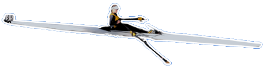
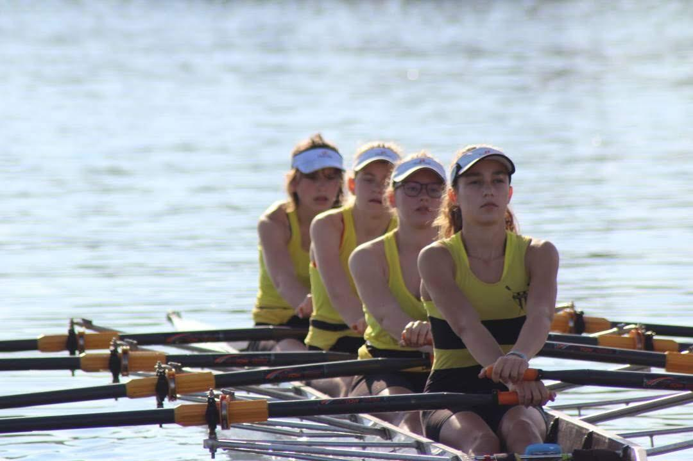
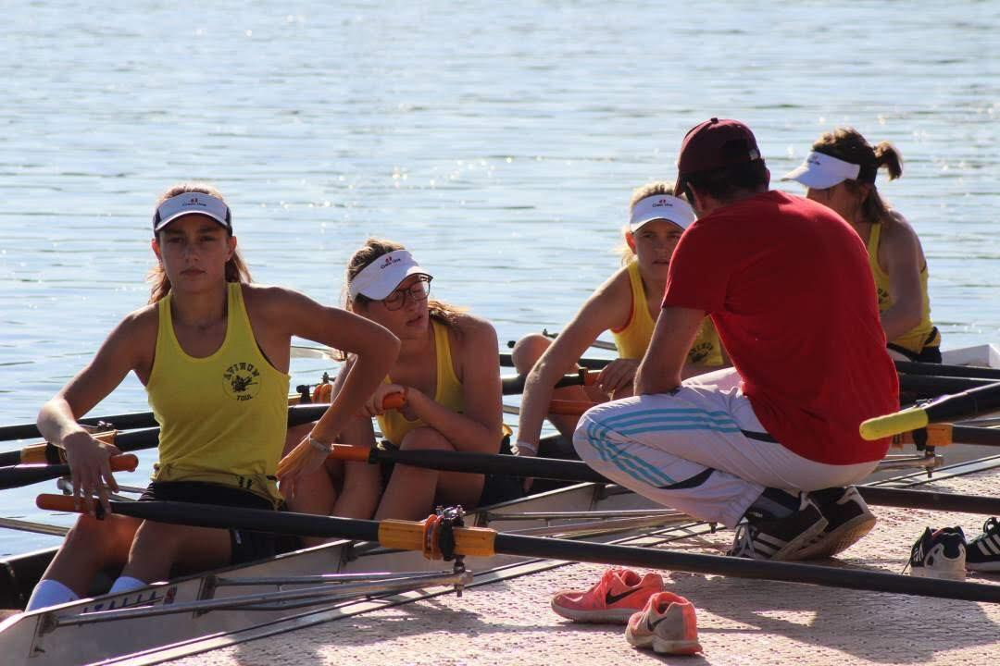
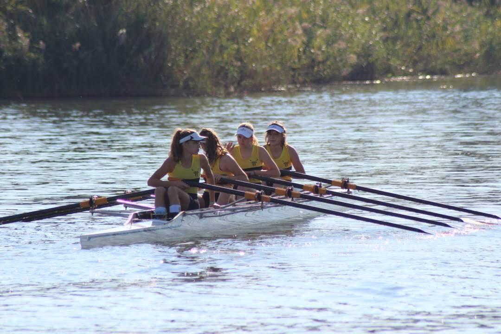
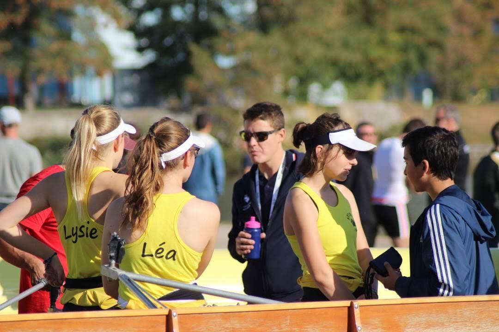

Rigueur
Respecter un programme exigeant et s'y tenir. Au travail : des plannings tenus et des deadlines respectées.
✦ Ce qui m'inspire
L'aviron, une école de rigueur et de persévérance. Un sport qui a forgé mon esprit d'équipe et ma détermination.
J'ai commencé l'aviron en classe de troisième. Dès la première année, avec quatre entraînements par semaine, je me qualifie pour les championnats de France en duo. Malgré des problèmes de santé qui m'ont contrainte à arrêter la pratique intensive, je ne me suis jamais éloignée de mon club. Cette expérience m'a appris la persévérance, l'esprit d'équipe et à ne jamais abandonner.
✦ Faites défiler pour ramer

Je découvre l'aviron en troisième, avec quatre entraînements par semaine.
Dès la première année, qualification pour les championnats de France en duo.
Compétitions en individuel, en duo et en équipe (quatre et huit) : coordination et patience.
Des problèmes de santé m'obligent à arrêter la pratique intensive. Je reste au club.
Organisation des tests chronométrés et encadrement des plus jeunes.
✦ Et ce que j'en fais au travail

Photo à venirRespecter un programme exigeant et s'y tenir. Au travail : des plannings tenus et des deadlines respectées.
Avancer ensemble, synchroniser les efforts. Au travail : coordonner 13 pays dans la même direction.
Performer en compétition malgré le stress. Au travail : garder son calme quand les échéances approchent.
Encadrer les plus jeunes et soutenir le collectif. Au travail : animer des ateliers et former les équipes.
“On va plus loin quand tout le monde rame dans le même sens.”
✦ Courses, équipages et podiums · cliquez pour agrandir
 Photo à venir
Photo à venir

Photo à venir
Photo à venir
Photo à venir